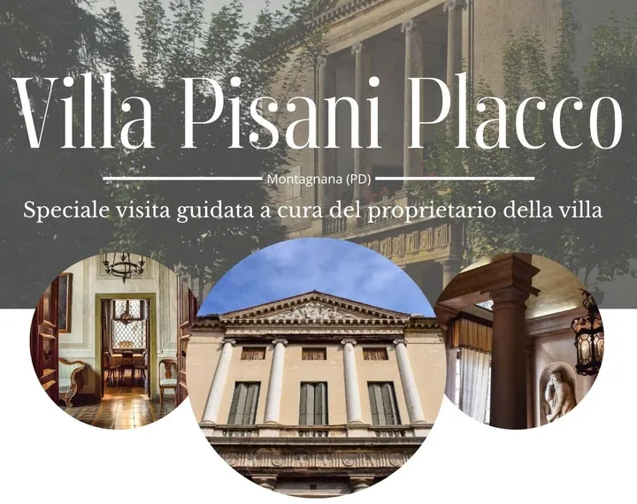

da dom 19 apr a dom 4 ott
Visita guidata a Villa Pisani - Placco
La villa Pisani di Montagnana prende il nome da Francesco Pisani, aristocratico veneziano, che incaricò il celebre Andrea Palladio di progettare la sua dimora appena fuori dalle mura medievali che racchiudono la città. Dal 1555, anno del suo completamento, ad oggi, questo…
 Indicazioni
Indicazioni
- Costi e prenotazioni
- Costo non indicato · Prenotazione non indicata
- Programma
- Programma da verificare. Apri la fonte ufficiale per orari e possibili aggiornamenti.
- In caso di maltempo
- Nessuna indicazione specifica pubblicata.
- Note
- Acquisito automaticamente dalla fonte.
L’EVENTO
Descrizione completa
La villa Pisani di Montagnana prende il nome da Francesco Pisani, aristocratico veneziano, che incaricò il celebre Andrea Palladio di progettare la sua dimora appena fuori dalle mura medievali che racchiudono la città. Dal 1555, anno del suo completamento, ad oggi, questo palazzo non ha mai smesso di essere abitato e la famiglia Placco, che l'acquistò verso la fine dell'800, ne è ancora oggi proprietaria e continua ad abitarvi.
Trattandosi di un'abitazione privata la villa solitamente è chiusa al pubblico, fatta eccezione per alcune rare e preziose occasioni in cui sarà il proprietario stesso a condurre i visitatori alla scoperta della storia e dell'architettura della villa.
La prima data, il domenica 19 aprile , è programmata all'interno delle giornate Unesco, di cui la villa fa parte. Sono inserite poi due giornate nella proposta culturale della festa del prosciutto, sabato 16 e sabato 23 maggio , per finire con due date autunnali, domenica 13 settembre e domenica 4 ottobre , quest'ultima data in concomitanza con la fiera del montagnanese.
Data l'eccezionalità dell'evento è richiesta la prenotazione, fino a esaurimento posti.
Il biglietto d'ingresso è di 10,00 € a persona, e l'appuntamento è fissato presso l’Ufficio Turistico I.A.T. , in Castel San Zeno da dove il gruppo sarà accompagnato in villa, situata a breve distanza.
IL PROGRAMMA
Programma e orari
Appuntamenti raccolti dalle fonti elencate. Dove manca un orario, non è ancora disponibile in questa scheda.
Programma pubblicato
- 2026-05-23 — 2026-05-23 · 17:00:00
- 2026-09-13 — 2026-09-13 · 16:00:00
- 2026-10-04 — 2026-10-04 · 16:00:00
- 2026-04-19 — 2026-04-19 · 11:00:00
INFORMAZIONI UTILI
Prima di partire
- Controllare la fonte prima di partire.
ORGANIZZAZIONE